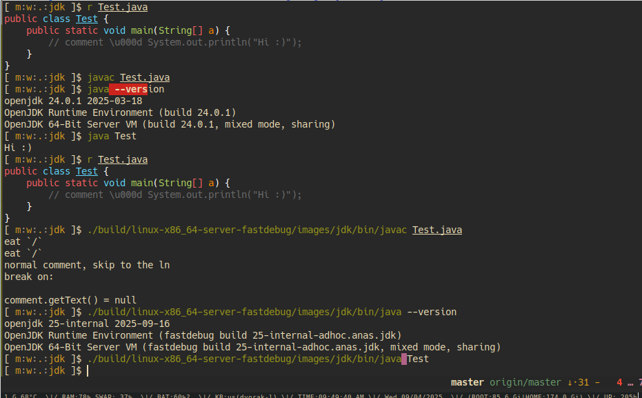

Now, we are fixing Java...
After I made that post, I got really curious—like, “hacker-in-a-dark-room-at-2am” curious—about what makes javac do that
So I cloned the OpenJDK source code, then I went full gremlin mode: grep here, trace there, follow function calls like a bloodhound with caffeine dependency :p until I stumbled into the compiler’s belly.
Turns out the culprit is a method called skipToEOLN. It’s basically a while loop that munches
characters until it finds a newline… and then munches that too. Classic compiler behavior.
/**
* Skip to end of line.
*/
protected void skipToEOLN() {
while (isAvailable()) {
if (isEOLN()) {
break;
}
next();
}
}
But here’s the twist—by the time we even get to skipToEOLN, the input stream has already been
preprocessed. That sneaky "\u000d"? It’s no longer a string. It’s already transformed into the raw
'\r' character. The lexer doesn’t need to be Unicode-aware—it’s just chugging ASCII at this point
like it’s 1999.
Okay, but can we fix that?
Actually... yes.
However! The lexer still remembers where that character came from. It actually knows which characters were originally Unicode escapes. So with a tiny bit of asking nicely (read: poking internal flags), we can detect and block this behavior.

And Voilà—I got my very own JDK 😎
"Why? Because it’s there." – Some compiler nerd, probably
The patch: https://gist.github.com/0x61nas/f82e7cef3fe1af4ffdfeb33c76ab72dc
Bye..█